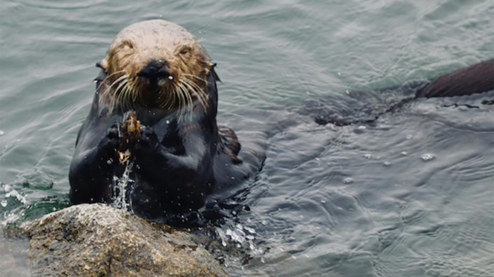
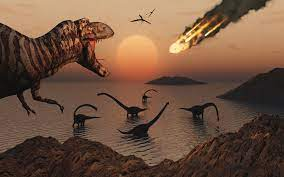
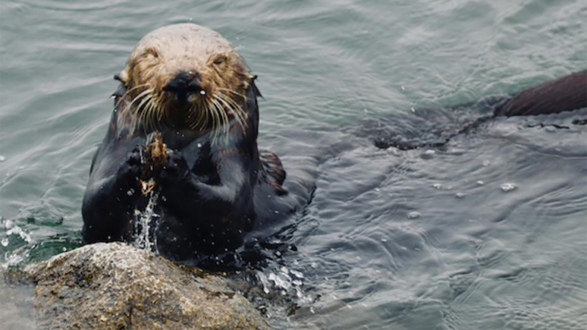
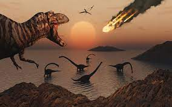
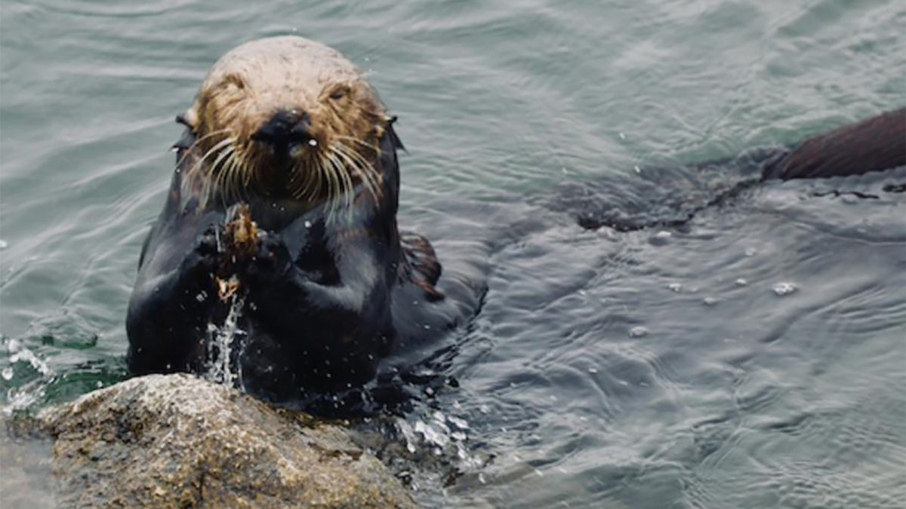
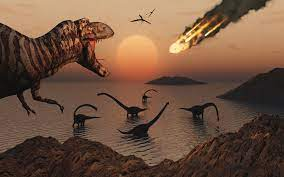
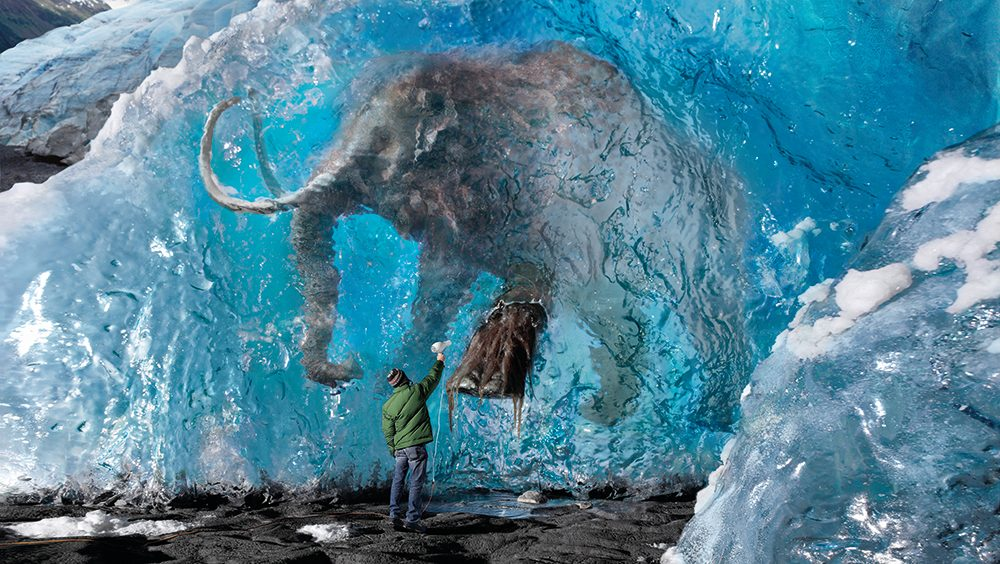
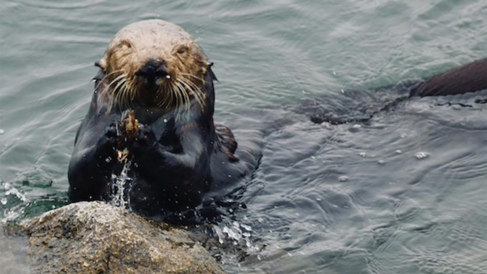
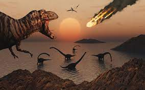
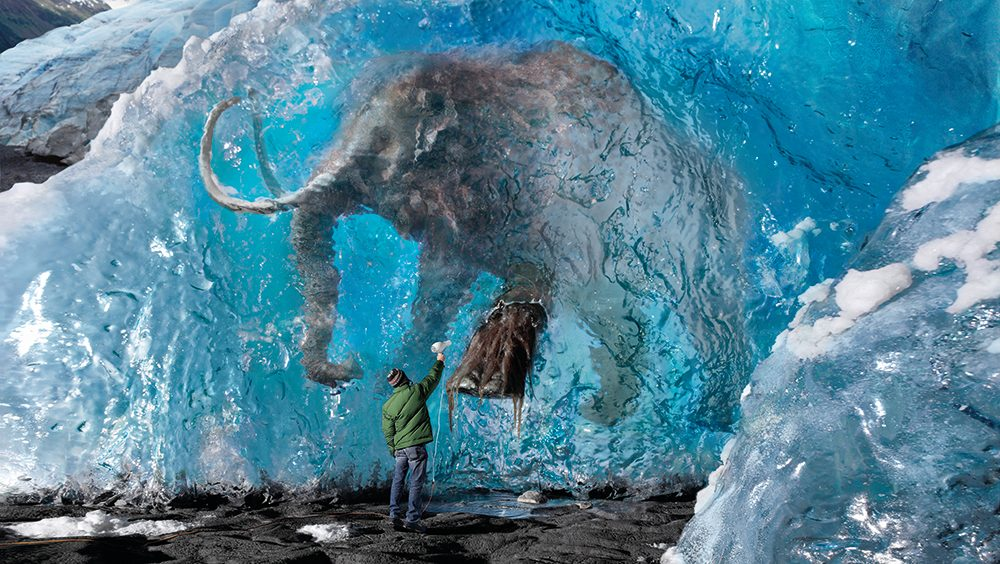

 







What Happens When a Blue Whale dies?
Click To Know!
Sea Otters and their tools
Click To Know!
EXTINCTION
Click To Know!
DINOSAURS: CELEBRITIES OF EXTINCTION
Click To Know!
BOREAL FOREST
Click To Know!
CAN SPECIES EVER COME BACK?
Click To Know!
WHAT IS A PERMAFROST
Click To Know!
HOW DO SNAKES MOVE?
Click To Know!